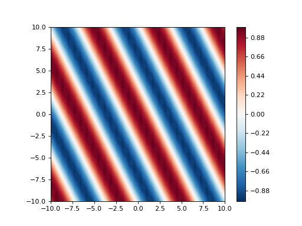
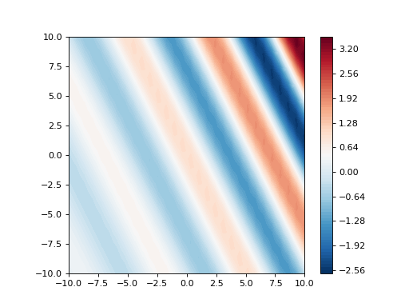
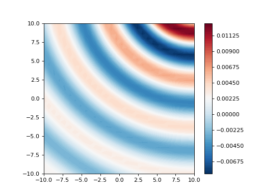

spharpy.spatial#
Functions:
|
Green's function for plane waves in free space in matrix form. |
|
Green's function for point sources in free space in matrix form. |
- spharpy.spatial.greens_function_plane_wave(source_points, receiver_points, wave_number, gradient=False)[source]#
Green’s function for plane waves in free space in matrix form. The matrix describing the propagation of a plane wave from a direction of arrival defined by the azimuth and elevation angles of the source points to the receiver points. The phase sign convention reflects a direction of arrival from the source position.
\[G(k) = e^{i \mathbf{k}^\mathrm{T} \mathbf{r}}\]- Parameters:
source_points (
pyfar.Coordinates) – The source points defining the direction of incidence for the plane wave. Note that the radius on which the source is positioned has no relevance.receiver_points (
pyfar.Coordinates) – The receiver points.wave_number (float, complex) – The wave number. A complex wave number can be used for evanescent waves.
gradient (bool) – If True, the gradient will be returned as well
- Returns:
M – The plane wave propagation matrix with shape [n_receiver, n_sources].
- Return type:
ndarray, complex
Examples
Plot Green’s function in the x-y plane for a plane wave with a direction of incidence defined by the vector \([x, y, z] = [2, 1, 0]\).
>>> import numpy as np >>> import matplotlib.pyplot as plt >>> from pyfar import Coordinates >>> import spharpy ... >>> spat_res = 30 >>> x_min, x_max = -10, 10 >>> xx, yy = np.meshgrid( >>> np.linspace(x_min, x_max, spat_res), >>> np.linspace(x_min, x_max, spat_res)) >>> receivers = Coordinates( ... xx.flatten(), yy.flatten(), np.zeros(spat_res**2)) >>> doa = Coordinates(2, 1, 0) ... >>> k = 1 >>> plane_wave_matrix = spharpy.spatial.greens_function_plane_wave( ... doa, receivers, k) >>> plt.figure() >>> plt.contourf( ... xx, yy, np.real(plane_wave_matrix.reshape(spat_res, spat_res)), ... cmap='RdBu_r', levels=100) >>> plt.colorbar() >>> ax = plt.gca() >>> ax.set_aspect('equal')
(
Source code,png,hires.png,pdf)
For evanescent waves, a complex wave number can be used
>>> import numpy as np >>> import matplotlib.pyplot as plt >>> from pyfar import Coordinates >>> import spharpy ... >>> spat_res = 30 >>> x_min, x_max = -10, 10 >>> xx, yy = np.meshgrid( >>> np.linspace(x_min, x_max, spat_res), >>> np.linspace(x_min, x_max, spat_res)) >>> receivers = Coordinates( ... xx.flatten(), yy.flatten(), np.zeros(spat_res**2)) >>> doa = Coordinates(2, 1, 0) ... >>> k = 1-.1j >>> plane_wave_matrix = spharpy.spatial.greens_function_plane_wave( ... doa, receivers, k, gradient=False) >>> plt.contourf( ... xx, yy, np.real(plane_wave_matrix.reshape(spat_res, spat_res)), ... cmap='RdBu_r', levels=100) >>> plt.colorbar() >>> ax = plt.gca() >>> ax.set_aspect('equal')
(
Source code,png,hires.png,pdf)
{kind=link}
{kind=link}
{kind=link}
{kind=link}
- spharpy.spatial.greens_function_point_source(sources, receivers, k, gradient=False)[source]#
Green’s function for point sources in free space in matrix form. The phase sign convention corresponds to a direction of propagation away from the source at position \(r_s\).
\[G(k) = \frac{e^{-i k\|\mathbf{r_s} - \mathbf{r_r}\|}} {4 \pi \|\mathbf{r_s} - \mathbf{r_r}\|}\]- Parameters:
source (
pyfar.Coordinates) – source points as Coordinates objectreceivers (
pyfar.Coordinates) – receiver points as Coordinates objectk (ndarray, float) – The wave number
- Returns:
G – Green’s function
- Return type:
ndarray, double
Examples
Plot Green’s function in the x-y plane for a point source at \([x, y, z] = [10, 15, 0]\).
>>> import numpy as np >>> import matplotlib.pyplot as plt >>> from pyfar import Coordinates >>> import spharpy ... >>> spat_res = 30 >>> x_min, x_max = -10, 10 >>> xx, yy = np.meshgrid( >>> np.linspace(x_min, x_max, spat_res), >>> np.linspace(x_min, x_max, spat_res)) >>> receivers = Coordinates( ... xx.flatten(), yy.flatten(), np.zeros(spat_res**2)) >>> doa = Coordinates(10, 15, 0) >>> plane_wave_matrix = spharpy.spatial.greens_function_point_source( ... doa, receivers, 1, gradient=False) >>> plt.contourf( ... xx, yy, np.real(plane_wave_matrix.reshape(spat_res, spat_res)), ... cmap='RdBu_r', levels=100) >>> plt.colorbar() >>> ax = plt.gca() >>> ax.set_aspect('equal')
(
Source code,png,hires.png,pdf)
{kind=link}
{kind=link}